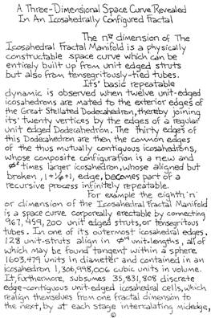
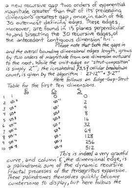
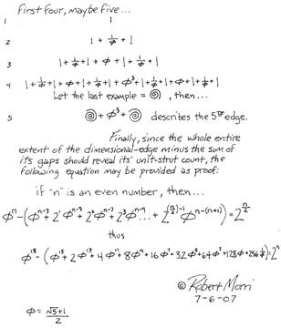

Robert Morri's Icosahedral Fractal
Robert Morri's notes are reproduced here with permission of Magnus Wenninger.
 |
 |
 |
The leftmost two images above form a "wall-eyed" stereo pair, while the rightmost two form a "cross-eyed" pair. Also, importantly, you can click on any image to load the model in vZome, using Java Web Start. This is true for all the images on this page.